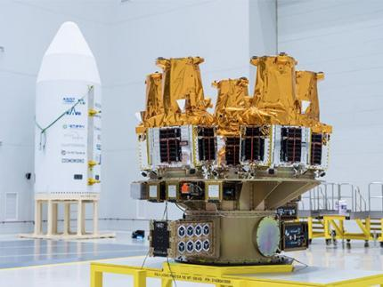
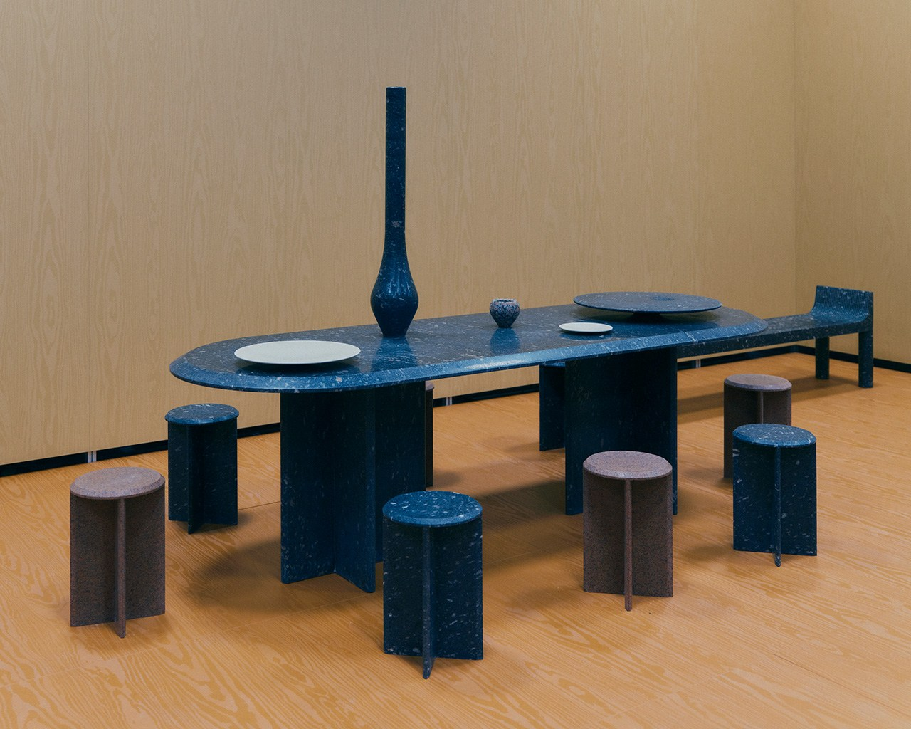

AI tools 04 1 min read
Claude moves inside Google Workspace Claude for Google Workspace is in public beta on paid Claude plans.
Read the briefing + Claude for Google Workspace is in public beta on paid Claude plans.
Where: A sidebar brings Claude into Docs, Slides and Sheets.Also: New connectors create and edit Workspace files directly from Claude.Caveat: Beta access and connector permissions deserve checking before using sensitive client files; this item is independently reported, not tested here.Read the original reporting
The Verge
Agents 05 1 min read
A protocol for personal agents and businesses Meta and Sierra are developing an open Personal Agent Protocol with commerce and software partners.
Read the briefing + Meta and Sierra are developing an open Personal Agent Protocol with commerce and software partners.
The design: OAuth-based sessions, consumer-granted access and routes through websites, APIs or business agents.Next step: The partners plan to publish specification v0.1 later this month.Caveat: This is a developing standard, not evidence of universal adoption or guaranteed safety.Read the original reporting
Sierra
Cybersecurity 06 1 min read
Anthropic opens three cyber-access tiers Anthropic has expanded its Cyber Verification Program and folded Project Glasswing into it.
Read the briefing + Anthropic has expanded its Cyber Verification Program and folded Project Glasswing into it.
Access: Defense, Red Team and Specialized tiers offer different capabilities and verification requirements.Scope: The program includes access to Mythos 5.1 and other top models for qualifying security professionals.Caveat: Not general unrestricted access. Authorized testing and security controls still apply. The Information’s related item was headline-only.Read the original reporting
Anthropic; The Information
Enterprise AI 07 1 min read
Ironclad turns business rules into agent tests OpenAI and Ironclad are training and evaluating computer-using agents on contracting workflows.
Read the briefing + OpenAI and Ironclad are training and evaluating computer-using agents on contracting workflows.
The test: Eleven tasks cover agreements, procurement approvals and reusable clauses, each judged against detailed criteria.Reported result: Astra averaged 55% of criteria versus 41.6% for GPT-5.6 Sol, with lower estimated time per attempt.Caveat: OpenAI’s research evaluation, not a general production reliability score. A useful architecture lesson is to test whole business rules, including exceptions.Read the original reporting
OpenAI
New labs 08 1 min read
Iris Labs launches with a $20M commitment Flagship has launched Iris Labs to build personal AI products focused on wellbeing.
Read the briefing + Flagship has launched Iris Labs to build personal AI products focused on wellbeing.
Backing: Flagship announces an initial $20 million funding commitment.First product: Iris Chat is a conversational thought partner delivered through iMessage and RCS.Caveat: Wellbeing benefits and early traction are company claims, not independently established clinical outcomes.Read the original reporting
Flagship Pioneering
Labs watch 09 1 min read
Primitive Labs gains Sony backing Sony Innovation Fund has invested in Primitive Labs, which builds models of human behaviour.
Read the briefing + Sony Innovation Fund has invested in Primitive Labs, which builds models of human behaviour.
Product: Its platform simulates customer populations interacting with digital experiences before launch.Positioning: Behavioural modelling rather than a general-purpose foundation-model race.Caveat: Founded earlier in 2026, not launched this week. The October 5 announcement does not disclose the investment amount.Read the original reporting
Primitive Labs
New AI units 10 1 min read
Teragonia launches Astra Labs Teragonia’s new Astra Labs unit promises fixed-fee enterprise AI built inside clients’ environments.
Read the briefing + Teragonia’s new Astra Labs unit promises fixed-fee enterprise AI built inside clients’ environments.
Offer: Move from workflow selection to prototype and production, starting with finance and healthcare.Angle: Client ownership and deployment inside the business are central to the pitch.Caveat: A new business unit, not a separate frontier lab. Guaranteed outcomes and delivery in weeks are vendor promises; check scope and terms.Read the original reporting
Teragonia / PR Newswire
Robotics 11 1 min read
Cortex puts human recovery into robot deployment Cortex Harness lets models operate real robots while humans guide them when they get stuck.
Read the briefing + Cortex Harness lets models operate real robots while humans guide them when they get stuck.
Mechanism: Operators can prompt or directly control robots, with interventions collected as recovery data.Availability: Cortex is inviting researchers and industry partners into a beta program.Caveat: A new platform from an existing company, not a newly founded lab. Demonstrations are not proof of unattended industrial reliability.Read the original reporting
Cortex AI
Models 12 1 min read
Falcon gets an Emirati dialect specialist TII has released Falcon-Emirati alongside new speech-recognition and Arabic document-reading models.
Read the briefing + TII has released Falcon-Emirati alongside new speech-recognition and Arabic document-reading models.
Language: Falcon-Emirati has 7 billion parameters and targets dialect, idioms and cultural context.Companions: Falcon-ASR is a 1.6-billion-parameter speech model; Falcon-OCR-Arabic extracts text and structured content.Caveat: The 84.83% dialect benchmark score is TII’s own reported evaluation. Check each model’s release terms before deployment.Read the original reporting
Technology Innovation Institute
AI research 13 1 min read
Pakistan’s AI hub starts with maternal health LUMS has announced a Gates Foundation grant for a nationally coordinated AI hub with Aga Khan University.
Read the briefing + LUMS has announced a Gates Foundation grant for a nationally coordinated AI hub with Aga Khan University.
First focus: Maternal, newborn and child health, combining AI research with clinical expertise and evaluation.Ambition: A long-term platform that can expand to other development challenges.Caveat: The university announcement does not state a grant amount. This is an institution-building plan, not evidence of improved patient outcomes yet.Read the original reporting
LUMS
Enterprise tech 14 1 min read
Precisely joins up the enterprise data layer Precisely has launched a unified data platform and AI Studio with ready-made apps, agents and skills.
Read the briefing + Precisely has launched a unified data platform and AI Studio with ready-made apps, agents and skills.
Foundation: Integration, quality, governance and shared metadata and semantics are brought together without requiring a single data ecosystem.Builder tools: AI Studio provides working assets for Claude, Copilot and ChatGPT; it is available now with a free-trial offer.Caveat: Vendor-described capabilities, not an independent deployment test. A semantic foundation is not automatically a finished business ontology.Read the original reporting
Precisely
AI tools 15 1 min read
Figma’s agent leaves beta and starts using credits Figma’s design agent is generally available, with guidelines, file search and visibility into teammates’ agents.
Read the briefing + Figma’s design agent is generally available, with guidelines, file search and visibility into teammates’ agents.
New controls: Design libraries can carry markdown guidelines that the agent reads when enabled.Practical change: The design agent and Weave now consume AI credits, with agent usage depending on task complexity and context.Caveat: General availability does not mean unlimited usage. Check the team’s shared credit budget.Read the original reporting
Figma
AI business 16 1 min read
Gemini narrows free model access Google plans to limit free Gemini users to Flash Lite from October 9.
Read the briefing + Google plans to limit free Gemini users to Flash Lite from October 9.
Changes: Standard Flash moves behind AI Plus; AI Plus will also lose access to Pro, with subscribers notified by email.Angle: The reported consumer-plan changes make paid model access more stratified.Caveat: This concerns the Gemini app’s subscriptions, not a claim about API pricing or enterprise contracts.Read the original reporting
The Verge
Capital 17 1 min read
OpenAI reportedly seeks another $30B Bloomberg reports OpenAI is discussing a $30 billion financing round with UAE funds and BlackRock.
Read the briefing + Bloomberg reports OpenAI is discussing a $30 billion financing round with UAE funds and BlackRock.
Status: Talks, according to people familiar with the matter, rather than completed financing.Angle: Sovereign and institutional capital are increasingly central to frontier-model funding.Caveat: Based on Bloomberg’s readable video summary. No completed deal or confirmed investor commitment is asserted.Read the original reporting
Bloomberg
Business 18 1 min read
Uber buys its way into corporate catering Uber has announced a $2.3 billion cash acquisition of ezCater to expand its enterprise delivery business.
Read the briefing + Uber has announced a $2.3 billion cash acquisition of ezCater to expand its enterprise delivery business.
Target: A platform for businesses arranging food for events, meetings and gatherings.Timing: Closing is expected in the coming months.Caveat: Only the readable opening of Bloomberg’s paywalled report was used. Announced is not closed.Read the original reporting
Bloomberg
Robotics 19 1 min read
Boston Dynamics appoints Rohit Prasad Former Amazon executive Rohit Prasad is Boston Dynamics’ new chief executive.
Read the briefing + Former Amazon executive Rohit Prasad is Boston Dynamics’ new chief executive.
Focus: The Hyundai-controlled robot company is moving towards industrial commercialization and physical AI.Context: Hyundai has said it plans to deploy Atlas at its Georgia plant starting in 2028.Caveat: Readable Bloomberg opening only. The factory deployment remains a future plan.Read the original reporting
Bloomberg
Capital 20 1 min read
Waymo’s reported debt raise reaches $5B Bloomberg reports Waymo increased its inaugural private debt raise to $5 billion.
Read the briefing + Bloomberg reports Waymo increased its inaugural private debt raise to $5 billion.
Lenders: Pimco, Blackstone and Sixth Street are among participants, according to people familiar with the matter.Purpose: Financing robotaxi expansion globally.Caveat: Readable opening only; lender participation is source-based reporting rather than separately confirmed here.Read the original reporting
Bloomberg
Space 21 1 min read

Image: KAIST Nuri prepares five new NEONSAT satellites KAIST says five NEONSAT microsatellites are scheduled for Nuri’s fifth launch on October 7.
Read the briefing + KAIST says five NEONSAT microsatellites are scheduled for Nuri’s fifth launch on October 7.
Payload: NEONSAT numbers 2 through 6 are designed for high-resolution Earth observation and disaster monitoring.Plan: A larger constellation is intended to improve revisit opportunities over the Korean Peninsula.Caveat: Launch is scheduled, not confirmed successful at this briefing’s cutoff. Refresh the status before describing it as in orbit.Read the original reporting
KAIST
Design 22 1 min read

Image: Monocle Milan’s Salone adds a contract-design marketplace Salone del Mobile has announced a new contract-design marketplace for its 2027 edition.
Read the briefing + Salone del Mobile has announced a new contract-design marketplace for its 2027 edition.
Format: Salone Contract aims to connect design brands with the people delivering hospitals, education spaces, offices and residential projects.Design: OMA is designing the initiative; the fair also plans outreach to Lagos and Cape Town.Caveat: A newly announced future program, not an event happening this week.Read the original reporting
Monocle